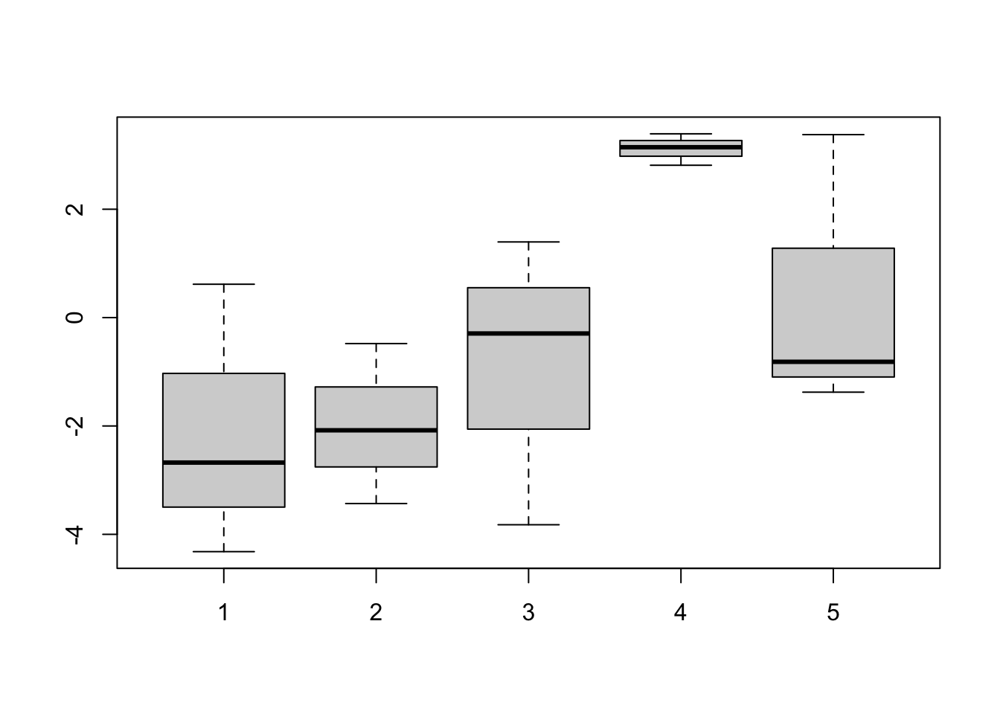
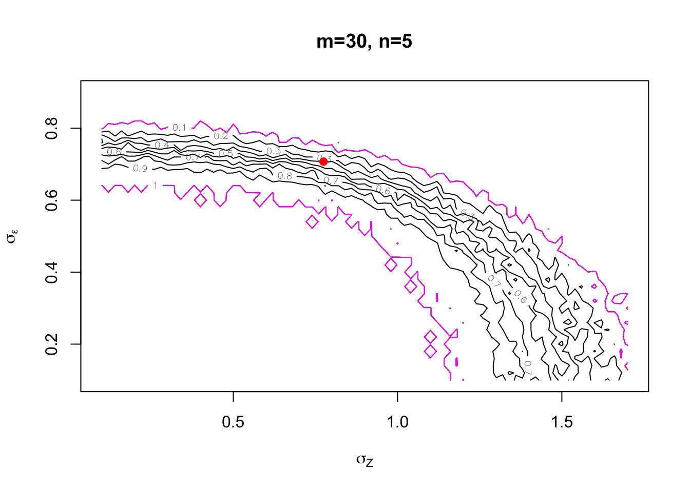

m <- 5
n <- 3
sig2 <- 7
tau2 <- 5
x <- sqrt(sig2) * matrix(rnorm(m * n), nrow=m) + sqrt(tau2) * rnorm(m)
boxplot(c(x[1,]), c(x[2,]), c(x[3,]), c(x[4,]), c(x[5,]))
This website is currently under construction.
Shih-Ni Prim
October 24, 2026
This page shows a toy example of how to construct a possibilistic inferential model (IM) for a random effect model.
\[\begin{align*} X_{ij} &= Z_i+\epsilon_{ij}, \\ X_{ij} &| Z_i \sim N(Z_i, \sigma^2_\epsilon), \\ Z_i & \sim N(0, \sigma^2_Z). \end{align*}\] for \(i = 1, \cdots, m\) and \(j = 1, \cdots, n\).
For example, if we set \(m=5, n=3\), here is one example of the data.

To construct an inferential model, we first construct the relative likelihood: \[ R(x, \theta) = \frac{p_{\theta}(x)}{\sup_{\vartheta} p_\vartheta(x)} = \exp \left( \log p_\theta(x) - \log p_{\hat{\theta}}(x) \right),\] where \(p_{\theta}(x)\) is the likelihood function. The marginal log likelihood is \[\begin{align*} \log P(X) &= -\frac{mn}{2} \log(2 \pi) - \frac{m(n-1)}{2} \log(\sigma^2_\epsilon) \\ & - \frac{m}{2} \log(\sigma^2_\epsilon + n \sigma^2_Z) - \frac{\sum_i \sum_j (x_{ij} - \bar{x_{i\cdot}})^2}{2\sigma^2_\epsilon} - \frac{n \sum_i \bar{x_{i\cdot}^2}}{2(\sigma^2_\epsilon + n\sigma^2_Z)}. \end{align*}\] The maximum likelihood estimators are: \[\begin{align*} \hat{\sigma}^2_\epsilon &= \frac{\sum_i \sum_j (x_{ij} - \bar{x}_i)^2}{m(n-1)}, \\ \hat{\sigma}^2_Z &= \frac{1}{n} \left( \frac{n \sum_i \bar{x}_i^2}{m} - \frac{\sum_i \sum_j (x_{ij} - \bar{x}_i)^2 }{m(n-1)} \right), \end{align*}\] where \(\bar{x}_i = \frac{1}{n} \sum_j x_{ij}\). Now we have all the pieces to calculate the relative likelihood.
The next step is a validation step:
\[\pi_x(\theta) = P_\theta(R(X, \theta) \le R(x, \theta)).\]
The code below finds the contour function \(\pi_x(\theta)\) given observation \(x\) and the parameter of interest \(\theta\).
get.suff.stat <- function(x) {
xbar.i <- rowMeans(x)
xbar <- mean(x)
out <- c(sum((x - xbar.i)**2), sum((xbar.i)**2))
return(out)
}
# marginal loglikelihood without the latent variable
logrellik <- function(x, sig2, tau2){
m <- nrow(x)
n <- ncol(x)
S <- get.suff.stat(x)
sig2_hat <- S[1]/(m*(n-1))
tau2_hat <- (n*S[2]/m - S[1]/(m*(n-1)))/n
f <- function(u) {
s2 <- exp(u[1])
t2 <- exp(u[2])
o1 <- m * (n - 1) * log(s2) + m * log(s2 + n * t2)
o2 <- S[1] / s2 + n * S[2] / (s2 + n * t2)
return( -(o1 + o2) / 2 )
}
out <- list( logrellik = f(c(sig2, tau2)) - f(c(sig2_hat, tau2_hat)))
return(out)
} Now assume we observe data from \(m=30\) groups and each grup has \(n=5\) repeated measures. Let’s plot the contour function.
m <- 30
n <- 5
sig2 <- .5
tau2 <- .6
size <- 100
thetaZ <- seq(.1, 1.7, by=.02)
thetaE <- seq(.1, .9, by=.02)
pi <- outer(thetaZ, thetaE)
e <- sqrt(sig2) * matrix(rnorm(m * n), nrow=m)
z <- sqrt(tau2) * rnorm(m)
x <- e+z
for (i in seq_along(thetaZ)){
for (j in seq_along(thetaE)){
ttau2 <- thetaZ[i]^2
ssig2 <- thetaE[j]^2
LHS <- rep(NA, size)
for (s in 1:size){
Z <- sqrt(ttau2) * rnorm(m)
E <- sqrt(ssig2) * matrix(rnorm(m * n), nrow = m)
X <- E + Z
LHS[s] <- logrellik(X, ssig2, ttau2)$logrellik
}
RHS <- logrellik(x, ssig2, ttau2)$logrellik
pi[i, j] <- mean(LHS <= RHS)
}
}
plot(0, 0, type = "n", xlim = c(.1, 1.7), ylim = c(.1, .9), xlab = expression(sigma[Z]), ylab = expression(sigma[epsilon]), main=paste0("m=",m,", n=",n))
contour(thetaZ, thetaE, pi, drawlabels=TRUE, add=TRUE)
contour(thetaZ, thetaE, pi, levels=c(.1,1),add=TRUE, col="magenta")
points(sqrt(tau2), sqrt(sig2), col="red", pch=19)
As shown above, the contour plot is now two-dimensional. The red dot is where the true variances are, and the two magenta curves mark the \(90\%\) confidence region.
Martin, Ryan. (2026). Possibilistic inferential models: a review. Journal of American Statistical Association, 121 (553): 807-826. Preprint.